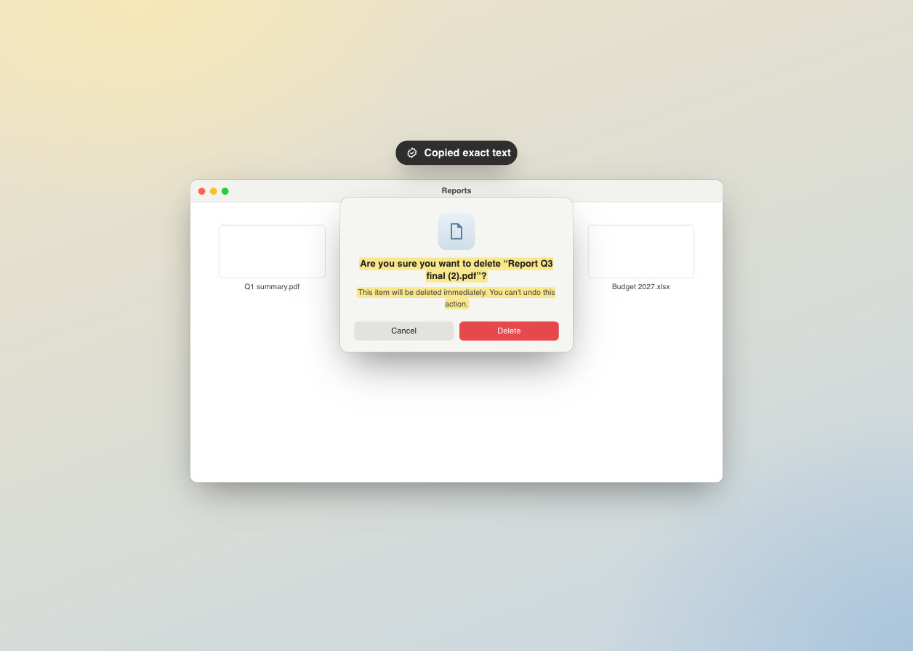
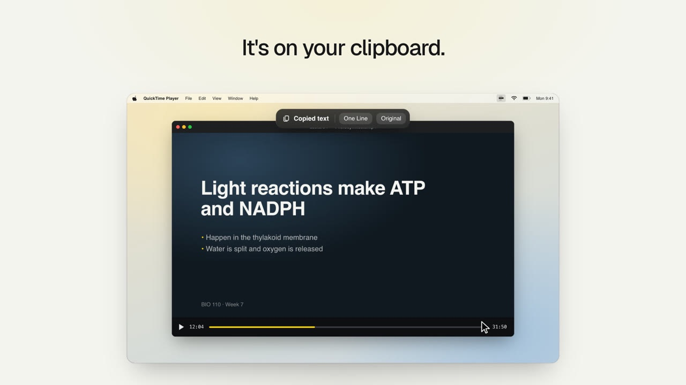
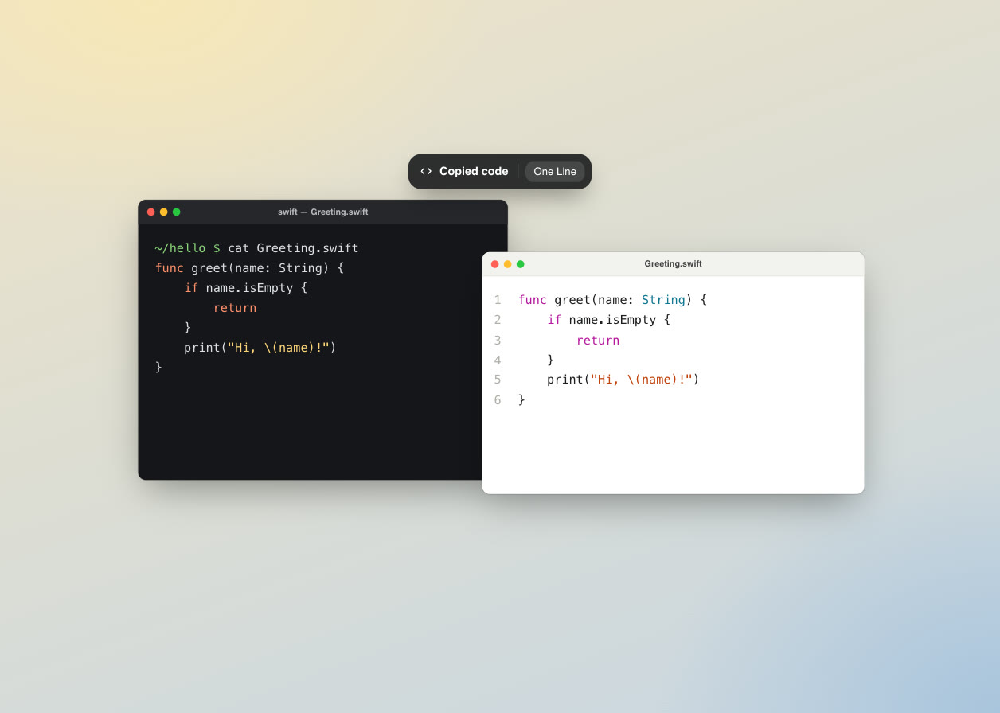
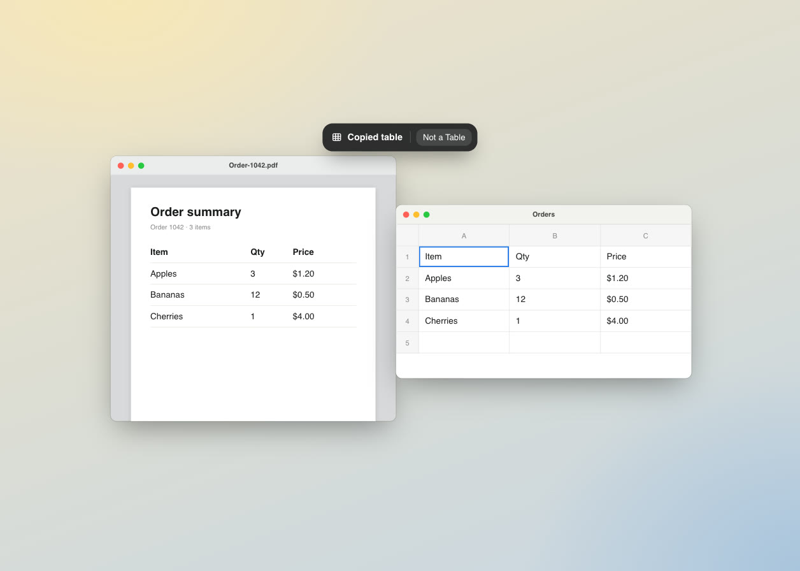
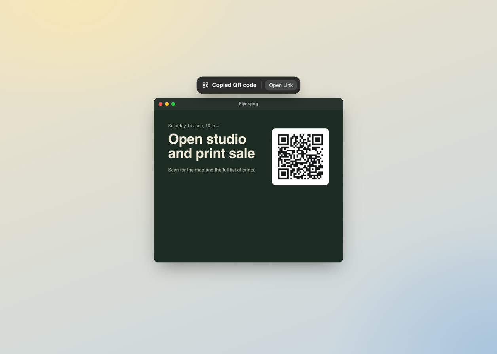
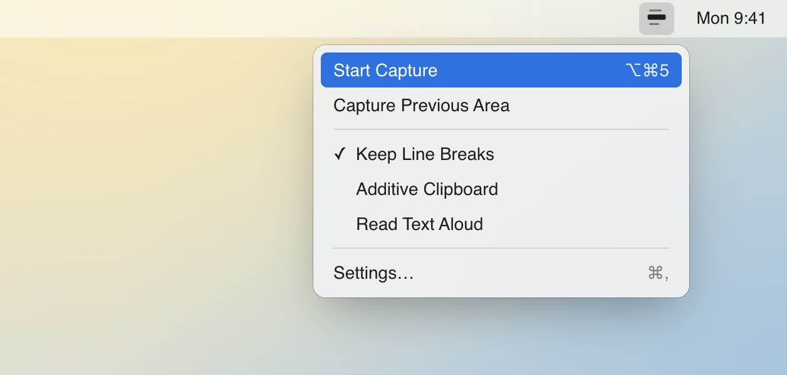
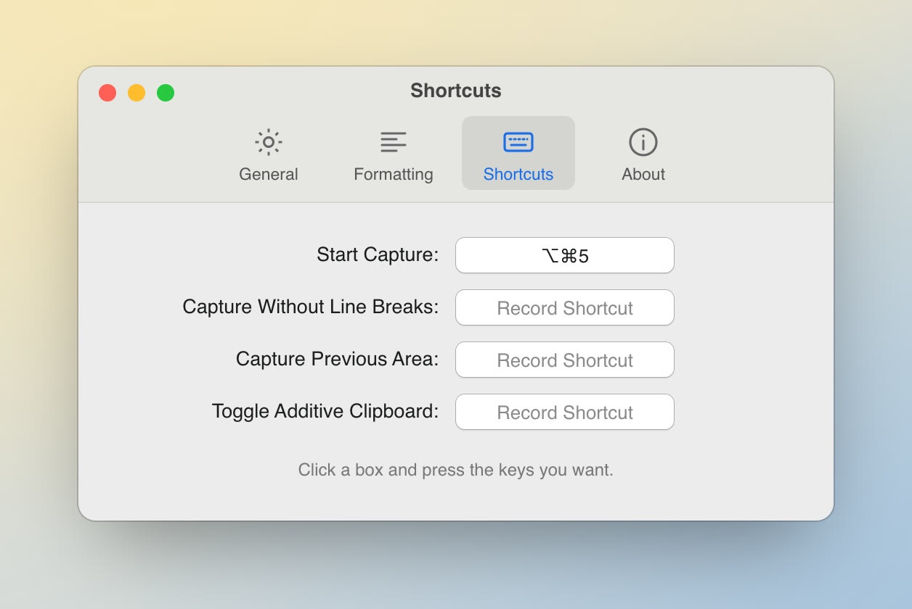

Copies an app's exact text
In a dialog or a page that blocks copying, TextSnag takes the app's own characters when they match what it sees.

New: TextSnag for Windows 10 and 11
Press ⌥⌘5 or Ctrl+Alt+5 and drag over a video, a PDF or a page that blocks copying. The text is on your clipboard in about 0.05 seconds.

What it's for
Paused lectures, scanned PDFs, screenshots and pages that block copying: if you can see the text, TextSnag puts it on your clipboard, shaped the way it looked, and nothing leaves your computer.
In a dialog or a page that blocks copying, TextSnag takes the app's own characters when they match what it sees.

Indentation stays, curly quotes turn straight, and a dark terminal reads as well as a light editor.

Rows and columns land in Excel, Numbers or Google Sheets, and as a neat text table in chat apps.

A QR code or barcode in the area goes on the clipboard with the text, and its link opens if you want.

Apple Silicon and Intel

x64 and ARM64
The code is public, so every answer here can be checked.

No. Text is read by Apple Vision on a Mac and Windows OCR on a PC. There's no account and no network call.
Nothing. TextSnag is open source under the MIT licence.
On a Mac, every language Apple Vision supports, detected on its own. On Windows, the languages with text recognition installed, usually your display language.
This build is signed but not yet notarized by Apple. Open Anyway in Privacy & Security lets it run, once.
Yes. Settings → Shortcuts records any key with ⌘, ⌥ or ⌃ on a Mac, or Ctrl, Alt or Win on Windows.